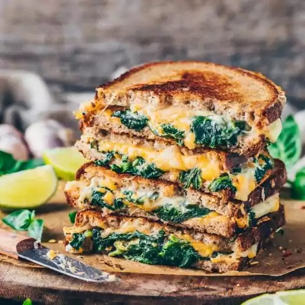

Veg Grilled Sandwich

Description
This quick and easy vegan grilled cheese sandwitch recipe is so delicious, you will not miss
the real deal! It's made iwth a daity-free creamy vegan cheese spinach filling that can be stuffed
into any kind of (gluten-free) sandwich bread!
Incredients
- Spinach Cream
- 1 tsp olive oil for frying
- 2 cloves garlic minced
- 3 cups fresh spinach roughlt chopped, or sub frozen
- pinch of salt
- 2 tbsp vegan cream cheese
- Cheese Sandwich
- 4 sliced bread of your choice
- 1 tbsp vegan butter or oil
- 1 cup vegan cheddar cheese
Steps
- Spinach Cream
- Heat a teaspoon of olive oil in skillet
- Add the garlic and sauté for 30 seconds
- Add the spinach an salt, and sauté for a minute until just wilted
- Transfer to a bowl, drain off any excess liquid
- Stir in the vegan cream cheese and another pinch of salt to taste.
- Grilled Cheese Sandwich
- Clean the same skillet and heat to medium-high heat
- Spread vegan butter on one side of each of the bread slices
- Once pan is hot, add 2 slices of bread, bittered side down
- On each slice, spread some shredded cheese, the spinach cream fillind, some more cheese
- Top with the other slices of bread, buttered side up
- When the bottom bread is browned, flip the sandwich and cook until the other side is toasted
Return to Main page